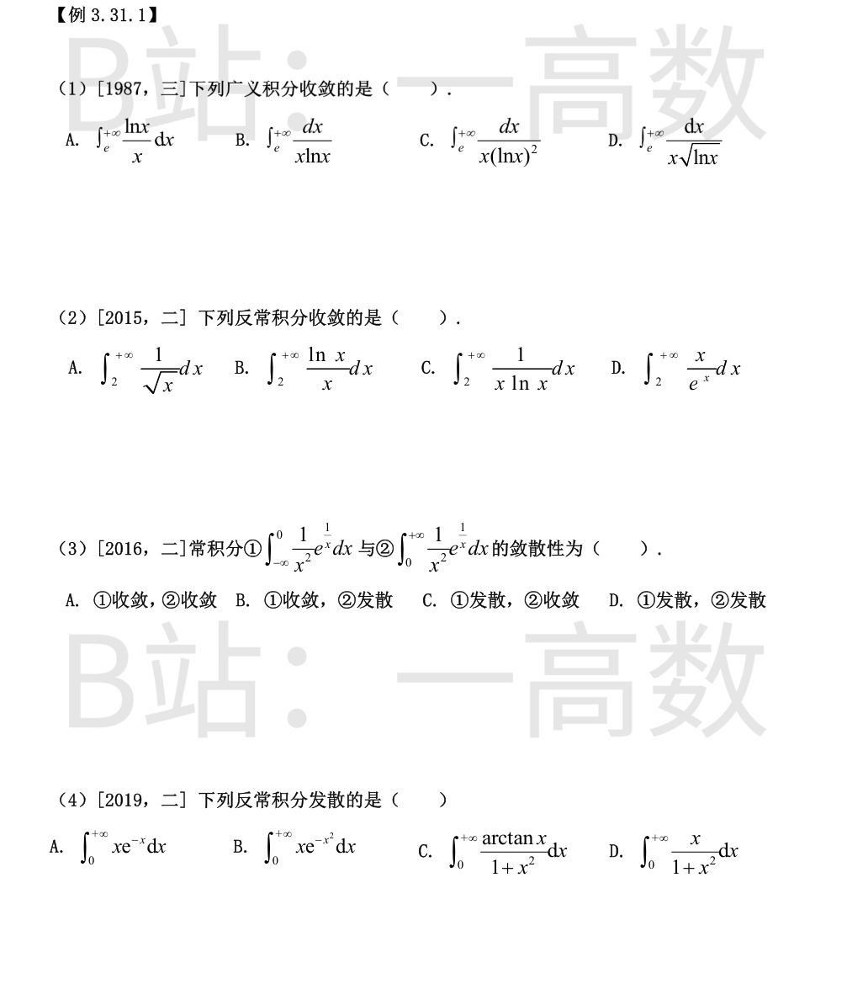
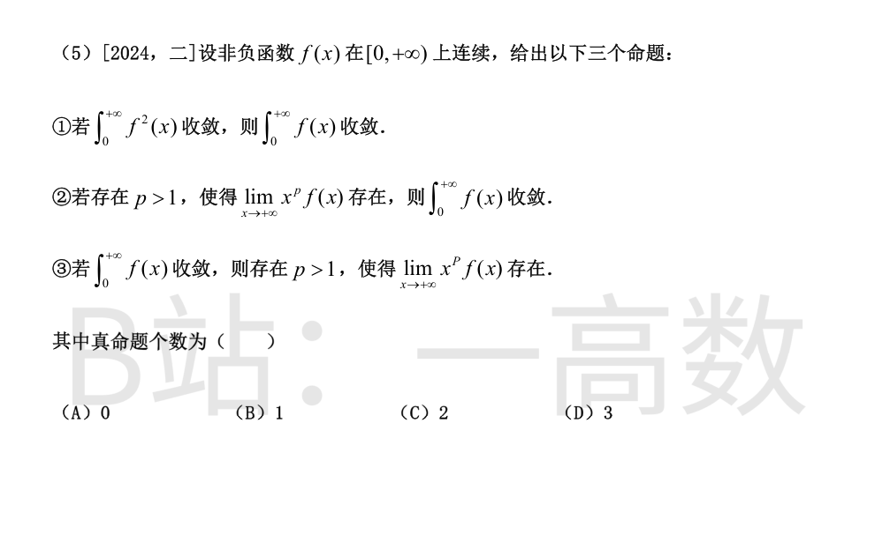
令 t=lnx，则 dx/x=dt，x=e→t=1，x→+∞→t→+∞，各积分化为 ∫_1^{+∞} 幂函数积分：
$$\text{A:}\int_1^{+\infty}t\,dt\ \text{发散};\quad \text{B:}\int_1^{+\infty}\frac{dt}{t}\ \text{发散};\quad \text{C:}\int_1^{+\infty}\frac{dt}{t^2}=1\ \text{收敛};\quad \text{D:}\int_1^{+\infty}t^{-1/2}dt\ \text{发散}$$
只有 C 收敛（对 ∫^{+∞}dt/t^p，p>1 才收敛）。选C。
A: ∫_2^{+∞}x^{-1/2}dx，p=1/2<1，发散。
B: $$\int_2^{+\infty}\frac{\ln x}{x}dx=\left.\frac{(\ln x)^2}{2}\right|_2^{+\infty}=+\infty$$ 发散。
C: 令 t=lnx 得 ∫_{ln2}^{+∞}dt/t，发散。
D: 被积函数 xe^{-x} 当 x→+∞ 时衰减快于任何 1/x^p，且 $$\int_2^{+\infty}xe^{-x}dx=\left.-(x+1)e^{-x}\right|_2^{+\infty}=3e^{-2}$$ 收敛。选D。
令 t=1/x，则 dt=−dx/x²。
①: x 从 −∞ 到 0⁻ 对应 t 从 0⁻ 到 −∞：
$$\int_{-\infty}^{0}\frac{e^{1/x}}{x^2}dx=\int_{0^-}^{-\infty}e^t(-dt)=\int_{-\infty}^{0}e^t\,dt=1\ \text{（收敛）}$$
②: x 从 0⁺ 到 +∞ 对应 t 从 +∞ 到 0⁺：
$$\int_{0}^{+\infty}\frac{e^{1/x}}{x^2}dx=\int_{+\infty}^{0^+}e^t(-dt)=\int_{0}^{+\infty}e^t\,dt=+\infty\ \text{（发散）}$$
选B。
A: $$\int_0^{+\infty}xe^{-x}dx=\left.-(x+1)e^{-x}\right|_0^{+\infty}=1$$ 收敛。
B: $$\int_0^{+\infty}xe^{-x^2}dx=\left.-\frac{1}{2}e^{-x^2}\right|_0^{+\infty}=\frac{1}{2}$$ 收敛。
C: 令 t=arctanx，dt=dx/(1+x²)：$$\int_0^{\pi/2}t\,dt=\frac{\pi^2}{8}$$ 收敛。
D: $$\int_0^{+\infty}\frac{x}{1+x^2}dx=\left.\frac{1}{2}\ln(1+x^2)\right|_0^{+\infty}=+\infty$$ 发散（x→+∞ 时与 1/x 同阶）。选D。
①假：取 f(x)=1/(1+x)，则 ∫_0^{+∞}f²dx=∫dx/(1+x)² 收敛，但 ∫_0^{+∞}dx/(1+x) 发散。
②真：设 lim_{x→+∞}x^p f(x)=L（存在，p>1），则某 X 之后 0≤f(x)≤(|L|+1)/x^p，而 ∫_X^{+∞}dx/x^p 当 p>1 收敛，由比较判别法 ∫f 收敛。
③假：构造在 x=n 处高为1、底宽约 1/n³ 的连续三角形脉冲列，脉冲面积和 Σ1/n³<∞，故 ∫f 收敛；但对任意 p>1，f(n)=1，n^p f(n)=n^p→+∞，故 lim_{x→+∞}x^p f(x) 不存在。
只有②正确，真命题 1 个，选B。
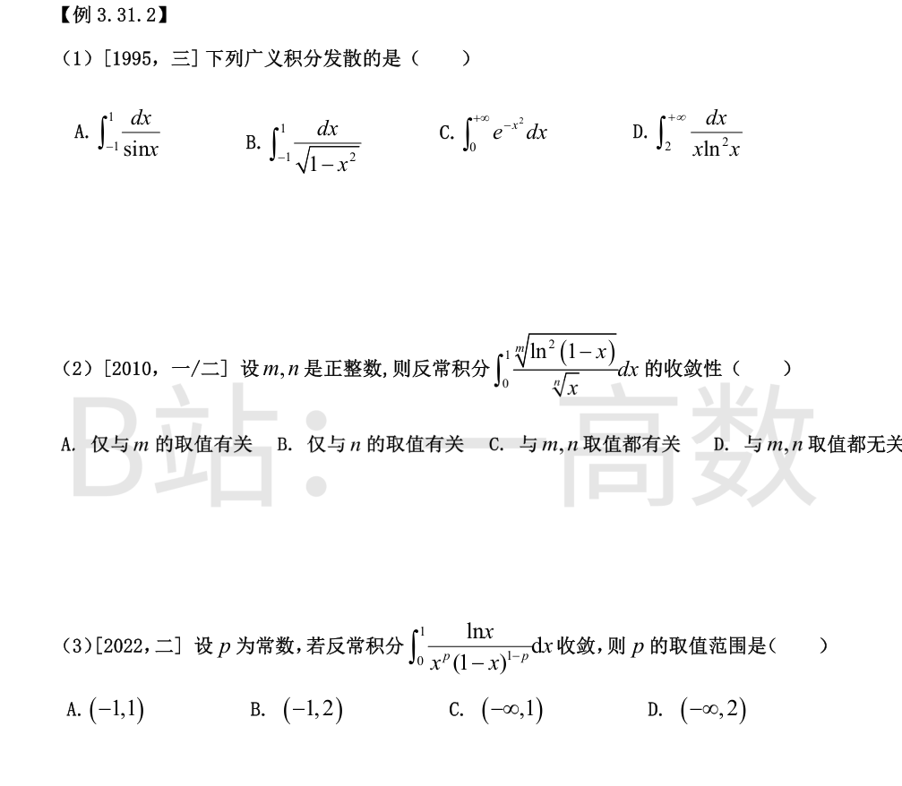
A: x=0 是瑕点，x→0 时 sinx∼x，∫_{-1}^1 dx/sinx 与 ∫dx/x 同阶，在 x=0 处发散。
B: 瑕积分 ∫_{-1}^1 dx/√(1-x²)=[arcsinx]_{-1}^{1}=π，收敛（端点处 ~1/√距端距离，可积）。
C: x≥1 时 e^{-x²}≤e^{-x}，比较得收敛。
D: $$\int_2^{+\infty}\frac{dx}{x\ln^2x}=\left.-\frac{1}{\ln x}\right|_2^{+\infty}=\frac{1}{\ln 2}$$ 收敛。故发散的只有A。
唯一瑕点 x=0。当 x→0⁺ 时 ln(1-x)∼-x，故 [ln²(1-x)]^{1/m}∼x^{2/m}，被积函数与
$$x^{2/m-1/n}$$
同阶。瑕积分 ∫_0 x^q dx 收敛 ⟺ q>-1，即需 2/m−1/n>−1 ⟺ 1/n<1+2/m。
对一切正整数 m,n：1/n≤1，而 1+2/m>1，不等式恒成立，故对任意正整数 m,n 都收敛，与 m,n 取值无关。选D。
x=0 与 x=1 都是瑕点，需分别讨论。
x→0⁺：lnx/x^p 起作用，∫_0 lnx·x^{-p}dx 只在 p<1 时收敛（x^{-p}lnx 型：p<1 时原函数 x^{1-p}(lnx/(1-p)−1/(1-p)²)→0）。
x→1⁻：令 u=1−x，则 lnx=ln(1-u)∼−u，x^p→1，(1-x)^{1-p}=u^{1-p}，被积函数 ∼−u/u^{1-p}=−u^p，∫_0 u^p du 收敛 ⟺ p>−1。
两处同时收敛需 −1<p<1。选A。
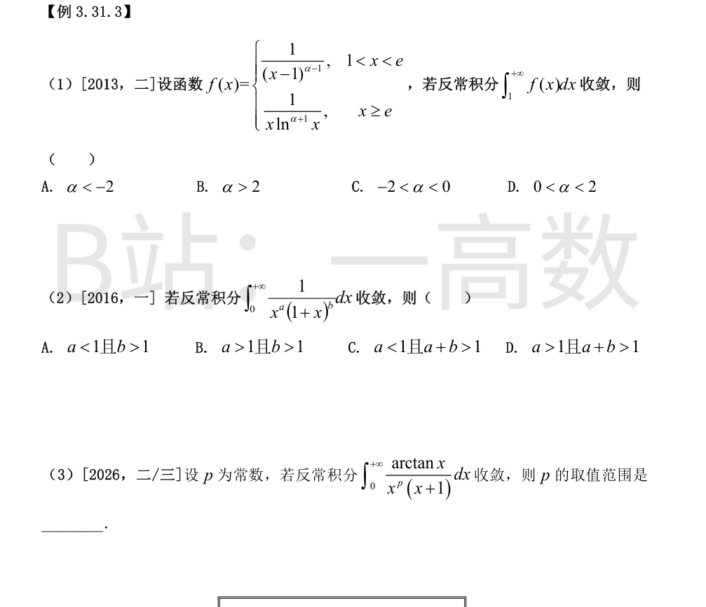
x=1⁺ 是瑕点，+∞ 是无穷端，需同时收敛。
x→1⁺：∫_1^2 dx/(x-1)^{α-1} 收敛 ⟺ α-1<1 ⟺ α<2。
x→+∞：∫_e^{+∞}dx/(x·ln^{α+1}x)，令 t=lnx 得 ∫_1^{+∞}dt/t^{α+1}，收敛 ⟺ α+1>1 ⟺ α>0。
综上 0<α<2。选D。
拆成 (0,1] 与 [1,+∞) 两段。
x→0⁺：被积函数 ∼1/x^a，∫_0 dx/x^a 收敛 ⟺ a<1。
x→+∞：被积函数 ∼1/x^{a+b}，∫^{+∞}dx/x^{a+b} 收敛 ⟺ a+b>1。
故收敛 ⟺ a<1 且 a+b>1。选C。
x=0 与 +∞ 两端讨论。
x→0⁺：arctanx∼x，被积函数 ∼x/x^p·1/(1+0)=x^{1-p}，∫_0 x^{1-p}dx 收敛 ⟺ 1-p>-1 ⟺ p<2。
x→+∞：arctanx→π/2（不为零），x+1∼x，被积函数 ∼(π/2)/x^{p+1}，收敛 ⟺ p+1>1 ⟺ p>0。
故收敛 ⟺ 0<p<2。
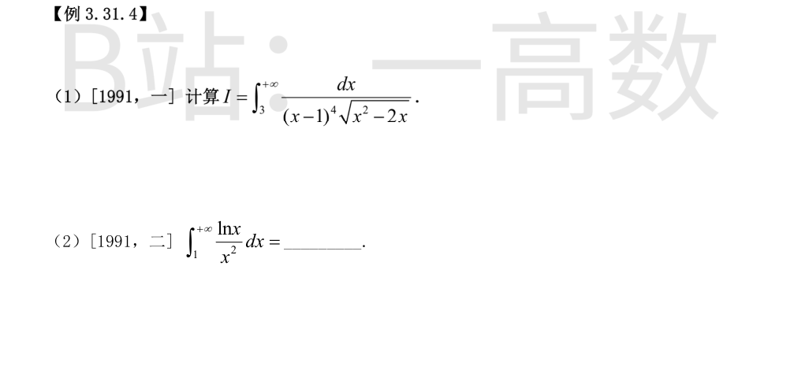
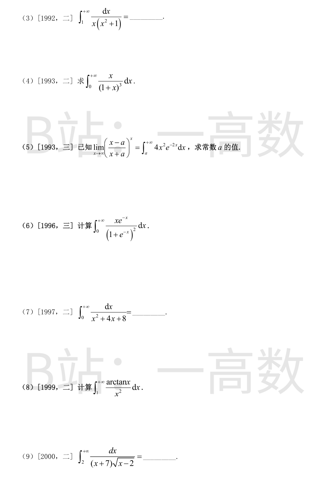
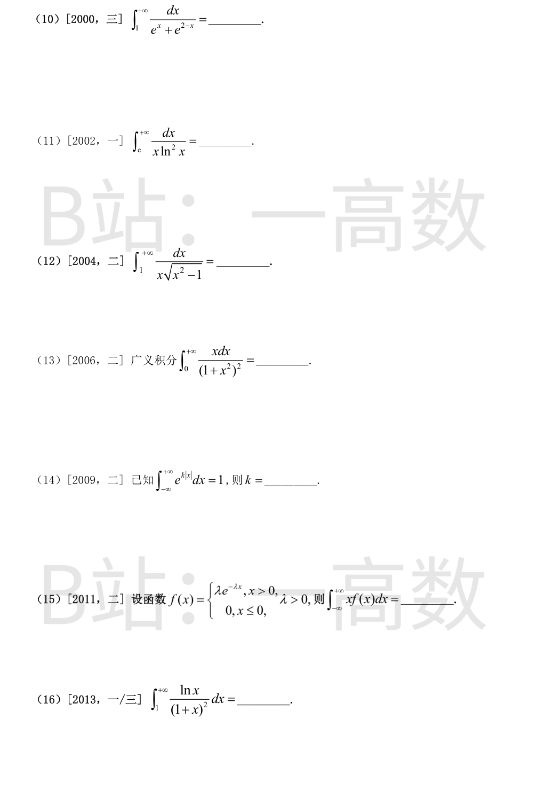
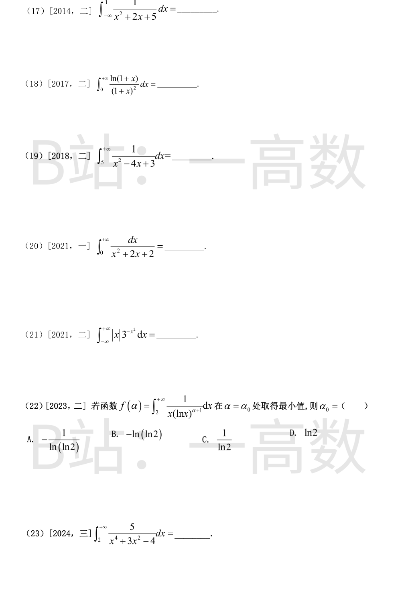
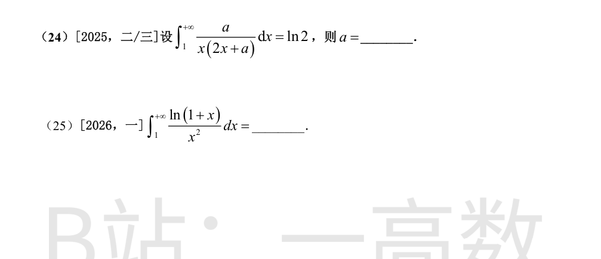
令 u=x-1，则 x²-2x=(x-1)²-1=u²-1，积分化为 ∫_2^{+∞}du/(u⁴√(u²-1))。
再令 u=secθ，du=secθtanθdθ，√(u²-1)=tanθ；u=2 对应 θ=π/3，u→+∞ 对应 θ→π/2⁻：
$$I=\int_{\pi/3}^{\pi/2}\frac{\sec\theta\tan\theta\,d\theta}{\sec^4\theta\tan\theta}=\int_{\pi/3}^{\pi/2}\cos^3\theta\,d\theta=\left[\sin\theta-\frac{\sin^3\theta}{3}\right]_{\pi/3}^{\pi/2}$$
$$=\Big(1-\frac13\Big)-\Big(\frac{\sqrt3}{2}-\frac{\sqrt3}{8}\Big)=\frac23-\frac{3\sqrt3}{8}$$
分部积分，取 u=lnx，dv=dx/x²，v=−1/x：
$$\int_1^{+\infty}\frac{\ln x}{x^2}dx=\left.-\frac{\ln x}{x}\right|_1^{+\infty}+\int_1^{+\infty}\frac{1}{x}\cdot\frac{dx}{x}=0-0+\left.-\frac1x\right|_1^{+\infty}=1$$
（x→+∞ 时 lnx/x→0。）
裂项：1/[x(x²+1)] = 1/x − x/(x²+1)。
$$\int_1^{+\infty}\Big(\frac1x-\frac{x}{x^2+1}\Big)dx=\left[\ln x-\frac12\ln(x^2+1)\right]_1^{+\infty}=\left.\ln\frac{x}{\sqrt{x^2+1}}\right|_1^{+\infty}=\ln1-\ln\frac{1}{\sqrt2}=\frac12\ln2$$
令 t=1+x，x=t−1：
$$\int_1^{+\infty}\frac{t-1}{t^3}dt=\int_1^{+\infty}\Big(\frac{1}{t^2}-\frac{1}{t^3}\Big)dt=\left[-\frac1t+\frac{1}{2t^2}\right]_1^{+\infty}=0-\Big(-1+\frac12\Big)=\frac12$$
左边：$$\lim_{x\to+\infty}\Big(\frac{x-a}{x+a}\Big)^x=\lim_{x\to+\infty}\Big(1+\frac{-2a}{x+a}\Big)^x=e^{-2a}$$
右边：由分部积分，∫x²e^{-2x}dx=−e^{-2x}(x²/2+x/2+1/4)，故
$$\int_a^{+\infty}4x^2e^{-2x}dx=\left[-e^{-2x}(2x^2+2x+1)\right]_a^{+\infty}=e^{-2a}(2a^2+2a+1)$$
令两边相等：e^{-2a}=e^{-2a}(2a²+2a+1) ⟹ 2a²+2a=0 ⟹ 2a(a+1)=0，a=0 或 a=−1。代回验证两值均使等式成立。
注意 d/dx[(1+e^{-x})^{-1}]=e^{-x}/(1+e^{-x})²。为使边界项收敛取 v=(1+e^{-x})^{-1}−1=−1/(1+e^x)：
$$I=\int_0^{+\infty}x\,d\Big(\frac{-1}{1+e^x}\Big)=\left.\frac{-x}{1+e^x}\right|_0^{+\infty}+\int_0^{+\infty}\frac{dx}{1+e^x}$$
边界项为 0。而 $$\int_0^{+\infty}\frac{dx}{1+e^x}=\left[x-\ln(1+e^x)\right]_0^{+\infty}=0-(-\ln2)=\ln2$$
故 I=ln2。
x²+4x+8=(x+2)²+4：
$$\int_0^{+\infty}\frac{dx}{(x+2)^2+2^2}=\left.\frac12\arctan\frac{x+2}{2}\right|_0^{+\infty}=\frac12\Big(\frac\pi2-\frac\pi4\Big)=\frac{\pi}{8}$$
取 u=arctanx，dv=dx/x²：
$$I=\left.-\frac{\arctan x}{x}\right|_1^{+\infty}+\int_1^{+\infty}\frac{dx}{x(1+x^2)}=0-(-\frac\pi4)+\int_1^{+\infty}\Big(\frac1x-\frac{x}{1+x^2}\Big)dx$$
$$=\frac\pi4+\left[\ln x-\frac12\ln(1+x^2)\right]_1^{+\infty}=\frac\pi4+\Big(0+\frac12\ln2\Big)=\frac\pi4+\frac12\ln2$$
令 t=√(x−2)，x=t²+2，dx=2t dt，x+7=t²+9：
$$\int_0^{+\infty}\frac{2t\,dt}{(t^2+9)t}=2\int_0^{+\infty}\frac{dt}{t^2+9}=2\cdot\frac13\left.\arctan\frac t3\right|_0^{+\infty}=\frac23\cdot\frac\pi2=\frac{\pi}{3}$$
分子分母同乘 e^x：$$\frac{1}{e^x+e^{2-x}}=\frac{e^x}{e^{2x}+e^2}$$
令 u=e^x，du=e^x dx，x=1→u=e：
$$\int_e^{+\infty}\frac{du}{u^2+e^2}=\left.\frac1e\arctan\frac ue\right|_e^{+\infty}=\frac1e\Big(\frac\pi2-\frac\pi4\Big)=\frac{\pi}{4e}$$
令 t=lnx，dt=dx/x，x=e→t=1：
$$\int_1^{+\infty}\frac{dt}{t^2}=\left.-\frac1t\right|_1^{+\infty}=1$$
x=1 是瑕点。令 x=secθ，dx=secθtanθdθ，√(x²−1)=tanθ，x=1→θ=0，x→+∞→θ→π/2⁻：
$$\int_0^{\pi/2}\frac{\sec\theta\tan\theta\,d\theta}{\sec\theta\tan\theta}=\int_0^{\pi/2}d\theta=\frac{\pi}{2}$$
$$\int_0^{+\infty}\frac{x\,dx}{(1+x^2)^2}=\frac12\int_0^{+\infty}\frac{d(1+x^2)}{(1+x^2)^2}=\left.-\frac{1}{2(1+x^2)}\right|_0^{+\infty}=0+\frac12=\frac12$$
被积函数为偶函数，收敛必须 k<0：
$$\int_{-\infty}^{+\infty}e^{k|x|}dx=2\int_0^{+\infty}e^{kx}dx=2\left.\frac{e^{kx}}{k}\right|_0^{+\infty}=2\Big(0-\frac1k\Big)=-\frac2k$$
（k<0 时 e^{kx}→0）。由 −2/k=1 得 k=−2。
$$\int_{-\infty}^{+\infty}xf(x)dx=\lambda\int_0^{+\infty}xe^{-\lambda x}dx=\lambda\left[-\frac{x}{\lambda}e^{-\lambda x}\Big|_0^{+\infty}+\frac1\lambda\int_0^{+\infty}e^{-\lambda x}dx\right]=\lambda\cdot\frac1\lambda\cdot\frac1\lambda=\frac1\lambda$$
（分部后边界项为0，∫_0^{+∞}e^{-λx}dx=1/λ。）
取 u=lnx，dv=dx/(1+x)²，v=−1/(1+x)：
$$I=\left.-\frac{\ln x}{1+x}\right|_1^{+\infty}+\int_1^{+\infty}\frac{1}{x(1+x)}dx=0+\int_1^{+\infty}\Big(\frac1x-\frac{1}{1+x}\Big)dx$$
$$=\left[\ln\frac{x}{1+x}\right]_1^{+\infty}=\ln1-\ln\frac12=\ln2$$
x²+2x+5=(x+1)²+2²：
$$\int_{-\infty}^{1}\frac{dx}{(x+1)^2+4}=\left.\frac12\arctan\frac{x+1}{2}\right|_{-\infty}^{1}=\frac12\Big(\arctan1+\frac\pi2\Big)=\frac12\Big(\frac\pi4+\frac\pi2\Big)=\frac{3\pi}{8}$$
取 u=ln(1+x)，dv=dx/(1+x)²，v=−1/(1+x)：
$$I=\left.-\frac{\ln(1+x)}{1+x}\right|_0^{+\infty}+\int_0^{+\infty}\frac{dx}{(1+x)^2}=0+\left.-\frac{1}{1+x}\right|_0^{+\infty}=1$$
x²−4x+3=(x−1)(x−3)，且 [5,+∞) 内无瑕点。1/(x²−4x+3)=½[1/(x−3)−1/(x−1)]：
$$I=\frac12\left[\ln\left|\frac{x-3}{x-1}\right|\right]_5^{+\infty}=\frac12\Big(\ln1-\ln\frac{2}{4}\Big)=\frac12\ln2$$
$$\int_0^{+\infty}\frac{dx}{(x+1)^2+1}=\left.\arctan(x+1)\right|_0^{+\infty}=\frac\pi2-\frac\pi4=\frac\pi4$$
偶函数：$$I=2\int_0^{+\infty}x\,3^{-x^2}dx$$
令 u=x²，du=2x dx：$$I=\int_0^{+\infty}3^{-u}du=\left.-\frac{3^{-u}}{\ln3}\right|_0^{+\infty}=0+\frac{1}{\ln3}=\frac{1}{\ln3}$$
令 t=lnx，x=2→t=ln2∈(0,1)：
$$f(\alpha)=\int_{\ln 2}^{+\infty}\frac{dt}{t^{\alpha+1}}$$
α>0 时收敛且 f(α)=(ln2)^{-α}/α；α≤0 时发散。记 L=ln(ln2)<0，则 f(α)=e^{-Lα}/α，
$$f'(\alpha)=e^{-L\alpha}\Big(-\frac{L}{\alpha}-\frac{1}{\alpha^2}\Big)=0\iff -L\alpha=1\iff \alpha=-\frac{1}{L}=-\frac{1}{\ln(\ln2)}>0$$
f 在 α→0⁺ 与 α→+∞ 时都→+∞，故该驻点为最小值点。选A。
x⁴+3x²−4=(x²+4)(x²−1)。设 5/[(x²+4)(x²−1)]=A/(x²−1)+B/(x²+4)，则 5=A(x²+4)+B(x²−1)，比较得 A+B=0，4A−B=5 ⟹ A=1，B=−1：
$$\int_2^{+\infty}\Big(\frac{1}{x^2-1}-\frac{1}{x^2+4}\Big)dx=\left[\frac12\ln\left|\frac{x-1}{x+1}\right|-\frac12\arctan\frac x2\right]_2^{+\infty}$$
$$=\Big(0-\frac\pi4\Big)-\Big(\frac12\ln\frac13-\frac12\cdot\frac\pi4\Big)=\frac12\ln3-\frac{\pi}{8}$$
a>0 时收敛。裂项：a/[x(2x+a)]=1/x−2/(2x+a)：
$$\int_1^{+\infty}\Big(\frac1x-\frac{2}{2x+a}\Big)dx=\left[\ln x-\ln(2x+a)\right]_1^{+\infty}=\ln\frac12-\big(0-\ln(a+2)\big)=\ln\frac{a+2}{2}$$
由 ln((a+2)/2)=ln2 得 a+2=4，即 a=2。
取 u=ln(1+x)，dv=dx/x²，v=−1/x：
$$I=\left.-\frac{\ln(1+x)}{x}\right|_1^{+\infty}+\int_1^{+\infty}\frac{1}{x(1+x)}dx=0-(-\ln2)+\left[\ln\frac{x}{1+x}\right]_1^{+\infty}$$
$$=\ln2+\big(\ln1-\ln\tfrac12\big)=\ln2+\ln2=2\ln2$$
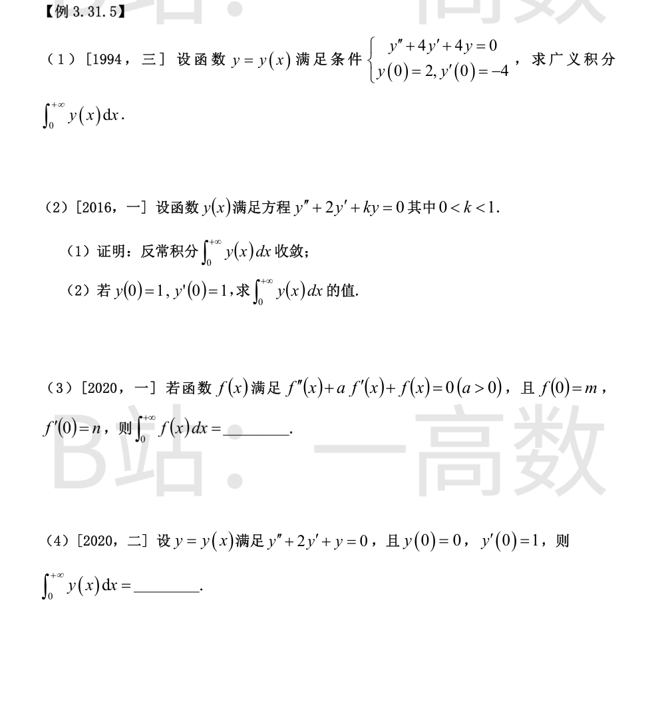
特征方程 r²+4r+4=0，r=−2（二重），通解 y=(C₁+C₂x)e^{−2x}。
y(0)=2 ⟹ C₁=2；y'(0)=C₂−2C₁=−4 ⟹ C₂=0。故 y=2e^{−2x}。
$$\int_0^{+\infty}y\,dx=\int_0^{+\infty}2e^{-2x}dx=2\cdot\frac12=1$$
(1) 特征方程 r²+2r+k=0 的两根 r_{1,2}=−1±√(1−k)。因 0<k<1，两根为相异负实根（0<√(1−k)<1，故 r₁=−1+√(1−k)<0）。通解 y=C₁e^{r₁x}+C₂e^{r₂x}，存在 M>0 使 |y(x)|≤Me^{r₁x}，而 ∫_0^{+∞}e^{r₁x}dx 收敛（r₁<0），由比较判别法 ∫_0^{+∞}|y|dx 收敛，从而 ∫_0^{+∞}y(x)dx 收敛。
(2) 对方程两边在 [0,+∞) 上积分：
$$\big[y'\big]_0^{+\infty}+2\big[y\big]_0^{+\infty}+k\int_0^{+\infty}y\,dx=0$$
由(1) y(x)→0 且 y'(x)=C₁r₁e^{r₁x}+C₂r₂e^{r₂x}→0，故 −y'(0)−2y(0)+k∫_0^{+∞}y dx=0，
$$\int_0^{+\infty}y\,dx=\frac{y'(0)+2y(0)}{k}=\frac{1+2}{k}=\frac{3}{k}$$
特征方程 r²+ar+1=0 的根实部均为负（a>0：两负实根或实部 −a/2<0 的共轭复根），故 f、f' 均按指数衰减，x→+∞ 时 f→0，f'→0，且 ∫_0^{+∞}f 收敛。
对方程在 [0,+∞) 上积分：
$$\big[f'\big]_0^{+\infty}+a\big[f\big]_0^{+\infty}+\int_0^{+\infty}f\,dx=0$$
$$-n-am+\int_0^{+\infty}f\,dx=0\implies \int_0^{+\infty}f(x)dx=n+am$$
特征方程 r²+2r+1=0，r=−1 二重，y=(C₁+C₂x)e^{−x}。y(0)=0⟹C₁=0；y'(0)=C₂−C₁=1⟹C₂=1，故 y=xe^{−x}。
$$\int_0^{+\infty}xe^{-x}dx=\left.-(x+1)e^{-x}\right|_0^{+\infty}=1$$
（与对方程积分所得公式 ∫y=y'(0)+2y(0)=1 一致。）
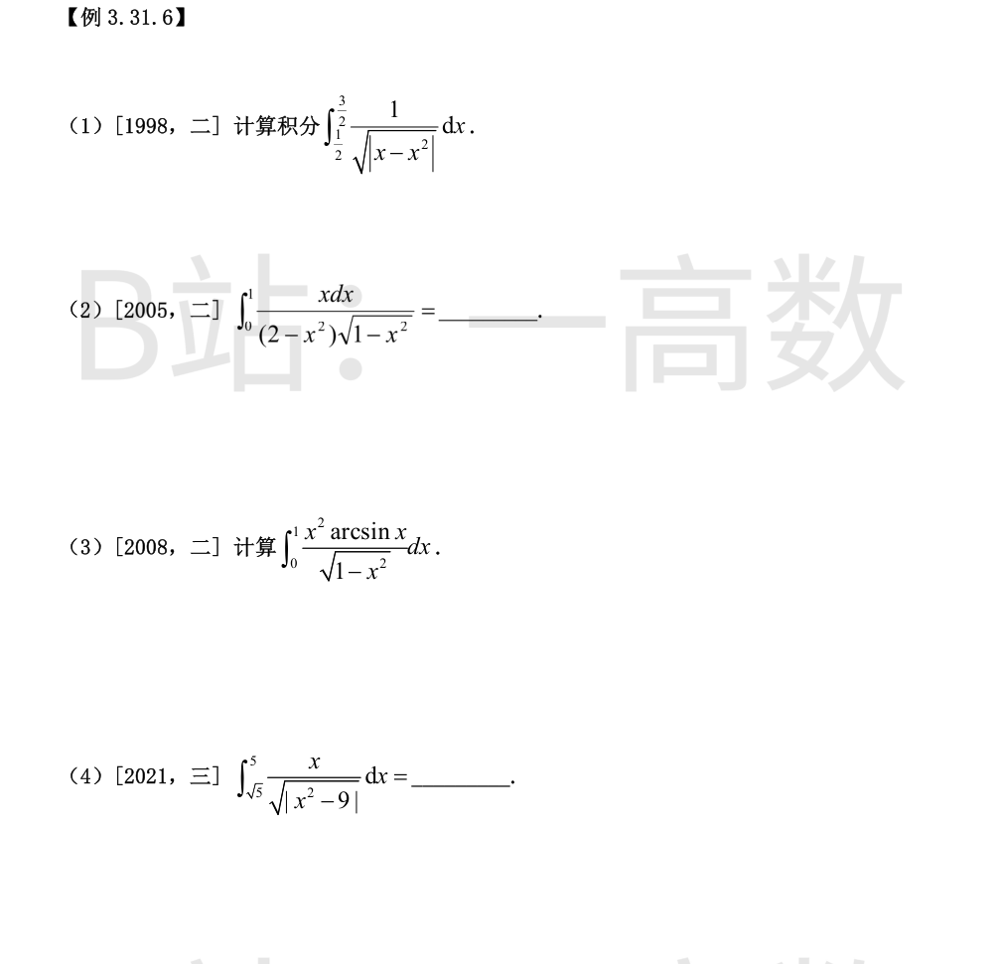
x=1 是瑕点（|x−x²| 在此为零），拆成两段。
(1/2,1)：x−x²=x(1−x)>0，$$\int_{1/2}^{1}\frac{dx}{\sqrt{x(1-x)}}=\left.2\arcsin\sqrt x\right|_{1/2}^{1}=2\Big(\frac\pi2-\frac\pi4\Big)=\frac\pi2$$
(1,3/2)：x²−x=(x−½)²−¼，$$\int\frac{dx}{\sqrt{(x-1/2)^2-(1/2)^2}}=\ln\big|x-\tfrac12+\sqrt{x^2-x}\big|$$
代入上下限：$$\ln\Big(1+\frac{\sqrt3}{2}\Big)-\ln\frac12=\ln(2+\sqrt3)$$
故原积分 = π/2 + ln(2+√3)。
令 x=sinθ，θ∈[0,π/2)：
$$I=\int_0^{\pi/2}\frac{\sin\theta\cos\theta}{2-\sin^2\theta}d\theta=\int_0^{\pi/2}\frac{\sin\theta\cos\theta}{1+\cos^2\theta}d\theta$$
令 u=cos²θ，du=−2sinθcosθdθ：
$$I=-\frac12\int_{u=1}^{0}\frac{du}{1+u}=\frac12\Big[\ln(1+u)\Big]_0^1=\frac12\ln2$$
令 x=sinθ，θ∈[0,π/2]：
$$I=\int_0^{\pi/2}\theta\sin^2\theta\,d\theta=\frac12\int_0^{\pi/2}\theta(1-\cos2\theta)d\theta$$
$$=\frac12\cdot\frac{\theta^2}{2}\Big|_0^{\pi/2}-\frac12\int_0^{\pi/2}\theta\cos2\theta\,d\theta$$
而 $$\int_0^{\pi/2}\theta\cos2\theta\,d\theta=\left.\frac{\theta\sin2\theta}{2}\right|_0^{\pi/2}-\int_0^{\pi/2}\frac{\sin2\theta}{2}d\theta=0+\left.\frac{\cos2\theta}{4}\right|_0^{\pi/2}=\frac{-1-1}{4}=-\frac12$$
故 I=π²/8 − ½·(−½)=π²/8+¼。
x=3 是瑕点，拆段：
[√5,3)：|x²−9|=9−x²，$$\int_{\sqrt5}^{3}\frac{x\,dx}{\sqrt{9-x^2}}=\left[-\sqrt{9-x^2}\right]_{\sqrt5}^{3}=0+\sqrt4=2$$
(3,5]：|x²−9|=x²−9，$$\int_3^{5}\frac{x\,dx}{\sqrt{x^2-9}}=\left.\sqrt{x^2-9}\right|_3^5=4-0=4$$
原积分 = 2+4 = 6。